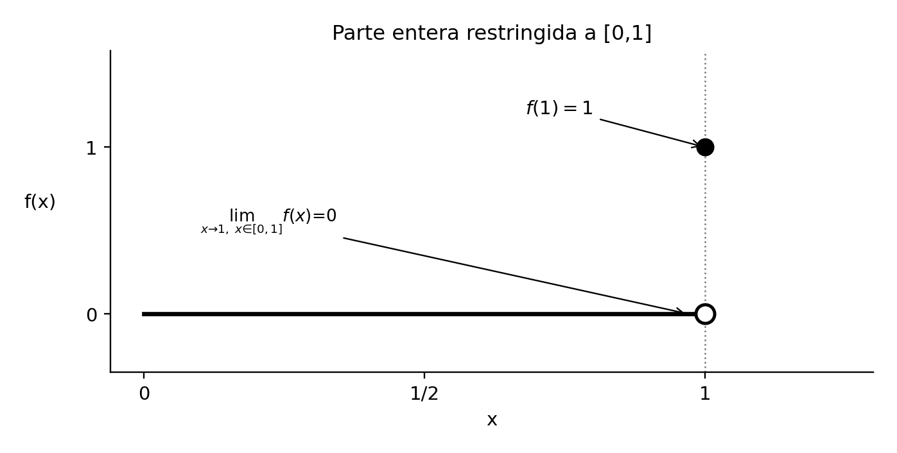
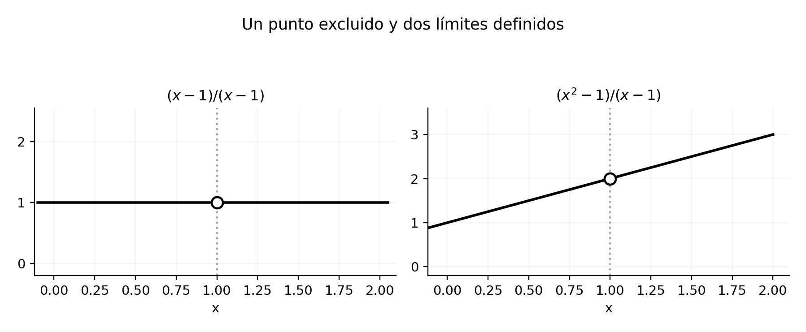
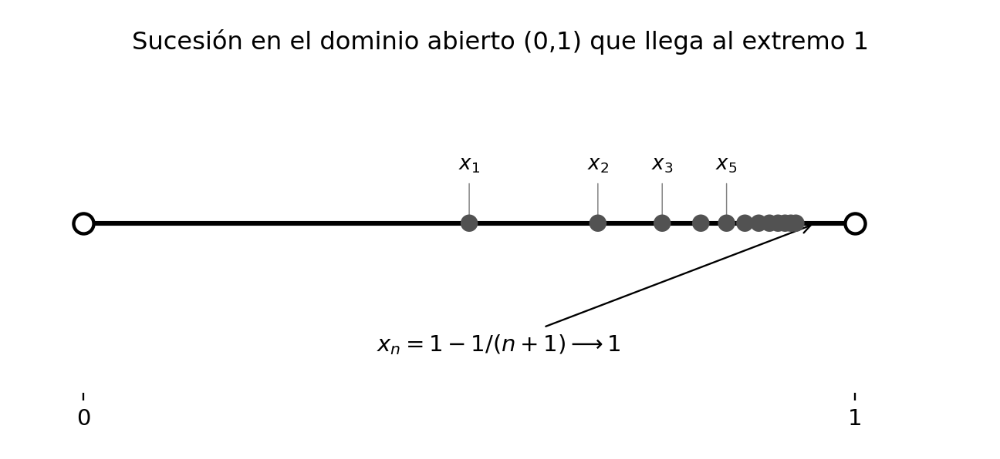
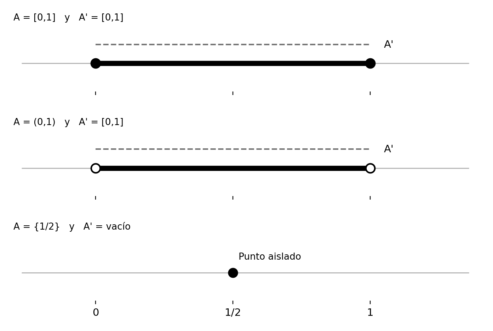
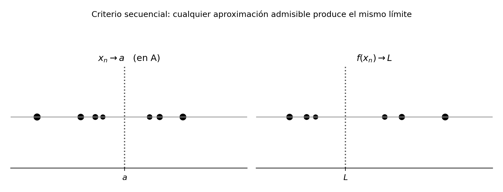
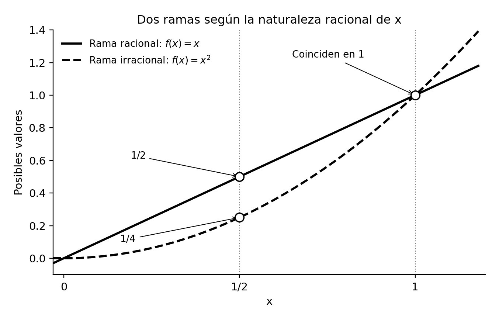

Puntos de acumulación y límite de una función
Capítulo 13 · Parte V. Límites de funciones y cálculo diferencial
El límite describe el comportamiento de una función cerca de un punto de acumulación de su dominio. Las sucesiones admisibles ofrecen una caracterización que distingue este comportamiento del valor puntual de la función.
Grabaciones de referencia: grabación de la cátedra 12.1.
Procedencia de este tramo: cátedra 12.1.
El problema que inaugura el cálculo de funciones
En la clase (11:31–14:08). Después de estudiar el axioma del supremo, las sucesiones y la función exponencial con su inversa, San Martín presenta las herramientas que permitirán investigar sistemáticamente las funciones reales de variable real. Las semanas 12 y 13 estarán dedicadas a los límites de funciones; el tema de las derivadas aparecerá en la semana 14. La presente sesión se concentra en un primer desafío: expresar con precisión qué significa aproximarse a un punto del dominio o a su frontera y observar las imágenes que produce una función.
Una función real de variable real tendrá la forma
\[ f:A\longrightarrow\mathbb R,\qquad A\subseteq\mathbb R. \]
Nos interesa un punto real \(a\) —el profesor escribe habitualmente \(\bar x\)— y la expresión
\[ \lim_{x\to a}f(x). \]
La pregunta que orienta esta notación es la siguiente: cuando los argumentos de \(f\) se aproximan a \(a\) a través de los puntos de \(A\), ¿hacia qué valor se aproximan sus imágenes? Esta investigación aprovecha la relación entre valores de una función y valores de una sucesión.
En la clase (14:52–22:35). El profesor distingue dos operaciones. La evaluación puntual \(f(a)\) describe el valor asignado al argumento \(a\), siempre que \(a\in A\). El límite describe el comportamiento de las imágenes para argumentos del dominio próximos a \(a\) y distintos de él. Una función puede tener en \(a\) un valor especialmente elegido, puede presentar allí un hueco, o puede coincidir en ese punto con la tendencia de las imágenes cercanas. La existencia y el valor de un límite se investigan observando las imágenes de esos argumentos próximos.
La observación da también el sentido matemático de la idea histórica de aproximarse «justo antes». En el orden de los reales, entre dos números distintos existen otros números; por ejemplo, si \(u<v\), su media \((u+v)/2\) satisface \(u<(u+v)/2<v\). De este modo, la aproximación puede continuar con distancias arbitrariamente pequeñas. San Martín menciona aquí la igualdad \(0{,}\overline9=1\) para ilustrar que una aproximación carece de un último término inmediatamente anterior a \(1\).
Dos primeros ejemplos: el valor puntual y el límite
La parte entera restringida a un intervalo
En la clase (22:45–26:38). Consideremos
\[ f:[0,1]\longrightarrow\mathbb R,\qquad f(x)=\lfloor x\rfloor. \]
Para \(0\le x<1\) se tiene \(f(x)=0\), mientras que \(f(1)=1\). Los argumentos del dominio que se aproximan a \(1\) y son distintos de \(1\) pertenecen al intervalo \([0,1)\) y tienen siempre imagen \(0\). Por consiguiente,
\[ \boxed{\lim_{\substack{x\to1\\x\in[0,1]}}\lfloor x\rfloor=0,\qquad f(1)=1.} \]
Aquí la aproximación sucede por puntos del dominio \([0,1]\); cerca de \(1\) estos puntos se encuentran a su izquierda. Esta precisión será decisiva cuando estudiemos qué puntos están disponibles para construir un límite.

Un punto excluido y dos cocientes algebraicos
En la clase (26:38–31:38). Sea, primero,
\[ g(x)=\frac{x-1}{x-1},\qquad A=\mathbb R\setminus\{1\}. \]
Para \(x\in A\), el cociente vale \(1\). Por tanto,
\[ \lim_{x\to1}g(x)=1. \]
El mismo procedimiento se aplica a
\[ h(x)=\frac{x^2-1}{x-1},\qquad x\in\mathbb R\setminus\{1\}. \]
La factorización \(x^2-1=(x-1)(x+1)\) permite escribir \(h(x)=x+1\) en su dominio. Si \(x\) se aproxima a \(1\) desde ese dominio, \(x+1\) se aproxima a \(2\); así,
\[ \boxed{\lim_{x\to1}\frac{x^2-1}{x-1}=2.} \]
Las dos funciones proporcionan ejemplos de discontinuidad removible en el lenguaje que se desarrollará más adelante: la regla algebraica queda definida en un dominio perforado y las imágenes circundantes determinan un único valor de aproximación.

Cómo formalizar la aproximación: sucesiones admisibles
En la clase (31:45–39:19). La aproximación de los argumentos puede realizarse con una sucesión \((x_n)\) que se acerque cada vez más a \(a\). Como estamos estudiando la función \(f:A\to\mathbb R\), cada \(x_n\) debe pertenecer al dominio. Además, el comportamiento de aproximación se examina mediante términos distintos del propio punto \(a\).
El profesor organiza el procedimiento en tres condiciones:
\[ \boxed{\begin{aligned} &x_n\longrightarrow a,\\ &x_n\in A\quad\text{para todo }n,\\ &x_n\ne a\quad\text{para todo }n. \end{aligned}} \]
Llamaremos sucesión admisible para la aproximación a \(a\) a una sucesión con esas propiedades. Esta denominación es editorial; corresponde a las tres condiciones de la pizarra. Por ejemplo, \(x_n=a+1/n\) converge a \(a\) y presenta términos distintos de \(a\). Resultará admisible cuando todos sus términos pertenezcan a \(A\). En un dominio \(A=(0,1)\), la sucesión \(x_n=1-1/(n+1)\) es admisible para aproximarse a \(1\).

Si \((x_n)\) cumple las tres condiciones, podemos evaluar la función término a término y obtener una nueva sucesión:
\[ \bigl(f(x_n)\bigr)_{n\ge1}. \]
La definición del límite exigirá que esta sucesión de imágenes tenga una aproximación común para cada elección de sucesión admisible. Esta universalidad enlaza las sucesiones con el comportamiento integral de una función alrededor de un punto.
Puntos de acumulación: el dominio fija las aproximaciones posibles
Definición secuencial
En la clase (39:19–58:36). Antes de formular el límite, el profesor introduce el concepto de punto de acumulación. El concepto caracteriza los puntos reales a los cuales puede aproximarse una sucesión de elementos de un conjunto permaneciendo en ese conjunto.
Definición — Punto de acumulación (en la clase, 51:57–57:00). Sea \(A\subseteq\mathbb R\). Un número \(a\in\mathbb R\) es un punto de acumulación de \(A\) si existe una sucesión \((x_n)\) tal que
\[ \boxed{\forall n\ge1:\ x_n\in A,\quad x_n\ne a, \qquad \lim_{n\to\infty}x_n=a.} \]
Escribiremos \(A'\) para el conjunto de puntos de acumulación de \(A\), notación editorial usual en topología. Su relación con \(A\) depende de cómo se distribuyen los elementos: un extremo de un intervalo puede ser punto de acumulación aunque ese extremo se encuentre excluido; un punto aislado del conjunto puede pertenecer a \(A\) y carecer de acumulación a su alrededor.
Ampliación editorial — Caracterización por vecindades. La definición anterior es equivalente a
\[ \forall\varepsilon>0\ \exists x\in A: \quad 0<|x-a|<\varepsilon. \]
La sucesión explícita de la definición demuestra esta propiedad tomando un término suficientemente próximo a \(a\). Recíprocamente, eligiendo para cada \(n\) un \(x_n\in A\) tal que \(0<|x_n-a|<1/n\), se construye una sucesión admisible que converge a \(a\). Esta equivalencia anticipa las vecindades que se estudiarán en cursos posteriores; su prueba se incorpora editorialmente.
Intervalos, extremos y puntos aislados
En la clase (40:16–51:40; recapitulación 1:04:08–1:16:55). Para el dominio \([0,1]\) todos sus puntos son de acumulación, incluidos los extremos. También los puntos \(0\) y \(1\) son acumulación de \((0,1)\): desde dentro del intervalo se puede aproximar cualquiera de ellos tanto como se desee. En ambos casos,
\[ [0,1]'=[0,1],\qquad (0,1)'=[0,1]. \]
En cambio, el conjunto \(\{1\}\) contiene un único punto aislado. Toda sucesión con términos en él es constante, de modo que ninguna satisface a la vez la condición de tener términos distintos de \(1\) y converger a \(1\). Por ello \(\{1\}'=\varnothing\). Para un conjunto finito de puntos distintos la misma distancia positiva entre puntos impide aproximaciones infinitamente finas desde elementos diferentes. También \(\mathbb N'=\varnothing\) como subconjunto de \(\mathbb R\): cada natural está separado del siguiente por una unidad.

El profesor revisa además los dominios con huecos: si \(A=\mathbb R\setminus\{1\}\), las sucesiones \(1+1/n\) o \(1-1/n\) se aproximan a \(1\) desde \(A\), y, por tanto, \(A'=\mathbb R\). Para el conjunto vacío también vale \(\varnothing'=\varnothing\).
La clasificación queda resumida en la tabla siguiente.
| Conjunto \(A\) | Puntos de acumulación \(A'\) | Idea de comprobación |
|---|---|---|
| \(\mathbb R\) | \(\mathbb R\) | \(a+1/n\to a\). |
| \([0,1]\) | \([0,1]\) | Aproximación desde el intervalo. |
| \((0,1)\) | \([0,1]\) | Ambos extremos son alcanzables. |
| \(\mathbb R\setminus\{1\}\) | \(\mathbb R\) | El punto excluido es alcanzable. |
| \(\{1\}\) | \(\varnothing\) | Punto aislado. |
| \(\{0,1,2,3\}\) | \(\varnothing\) | Conjunto finito. |
| \(\mathbb N\) | \(\varnothing\) | Distancia entre naturales consecutivos. |
| \(\varnothing\) | \(\varnothing\) | Ausencia de elementos con que construir la sucesión. |
| \(\mathbb Q\) | \(\mathbb R\) | Densidad de los racionales. |
| \(\mathbb R\setminus\mathbb Q\) | \(\mathbb R\) | Densidad de los irracionales. |
Precisión editorial. El límite \(n\to\infty\) de una sucesión \(s:\mathbb N\to\mathbb R\) es una herramienta distinta del límite de funciones en un punto real finito de acumulación del dominio. La ausencia de puntos de acumulación reales de \(\mathbb N\) concuerda con el uso del límite de sucesiones cuando el índice crece sin cota. El profesor hace expresamente esta distinción entre 1:13:32 y 1:16:47.
Los racionales y los irracionales se acumulan en todo real
En la clase (1:16:55–1:26:15). La densidad de los racionales afirma que, dados dos reales \(u<v\), existe un racional \(r\) tal que \(u<r<v\). El profesor propone construir, para un real \(a\), términos racionales \(r_n\) que satisfagan
\[ a<r_n<a+\frac1n. \]
El teorema del sándwich implica \(r_n\to a\), y cada \(r_n\) pertenece a \(\mathbb Q\) y difiere de \(a\). Por tanto, todo real es punto de acumulación de \(\mathbb Q\). En particular, se pueden aproximar \(\sqrt2\), \(\pi\) o \(e\) mediante sucesiones racionales.
La densidad de los irracionales produce el resultado análogo para \(\mathbb R\setminus\mathbb Q\). El profesor observa, por ejemplo, que cuando \(a\in\mathbb Q\), la sucesión \(a+\sqrt2/n\) está formada por irracionales, converge a \(a\) y tiene términos distintos del límite; cuando \(a\) es irracional puede emplearse \(a+1/n\).
\[ \boxed{\mathbb Q'=\mathbb R, \qquad (\mathbb R\setminus\mathbb Q)'=\mathbb R.} \]
Esta propiedad constituye una razón conceptual para estudiar límites en la frontera de un dominio. Una función inicialmente definida en \(\mathbb Q\) puede examinarse mediante sucesiones racionales que convergen a números irracionales. La posibilidad de definir allí un valor por límite requiere además que todas las aproximaciones admisibles generen la misma tendencia de imágenes.
Definición rigurosa del límite de una función
En la clase (1:26:15–1:34:43). Llegamos a la definición que organiza los ejemplos anteriores. Sea \(f:A\to\mathbb R\), sea \(a\) un punto de acumulación de \(A\) y sea \(L\in\mathbb R\).
Definición — Límite secuencial de una función. Diremos que
\[ \lim_{x\to a}f(x)=L \]
si para toda sucesión \((x_n)\) que satisfaga
\[ x_n\in A,\qquad x_n\ne a\quad(n\ge1), \qquad x_n\longrightarrow a, \]
la sucesión de imágenes satisface
\[ \boxed{f(x_n)\longrightarrow L.} \]
Una formulación cuantificada permite identificar con precisión su estructura lógica:
\[ \boxed{\forall(x_n)\;\Bigl[ \bigl((\forall n)\ x_n\in A\setminus\{a\}\bigr) \land x_n\to a \ \Longrightarrow\ f(x_n)\to L\Bigr].} \]

Demostración desarrollada de la buena definición de las imágenes. Cada término \(x_n\) se encuentra en el dominio \(A\). Por la regla funcional, \(f(x_n)\) es un número real, y la asignación \(n\mapsto f(x_n)\) define una función \(\mathbb N\to\mathbb R\), es decir, una sucesión. Este paso explica por qué el profesor insiste en la tercera condición. Se trata de una composición \(f\circ x\), donde la sucesión \(x:\mathbb N\to A\) sirve de entrada a \(f\).
Ampliación editorial — Por qué exigimos un punto de acumulación. La hipótesis \(a\in A'\) garantiza la existencia de sucesiones admisibles. Si \(a\) fuese aislado, el enunciado «para toda sucesión admisible» quedaría satisfecho formalmente para todo valor \(L\) por ausencia de tales sucesiones. Al reservar la definición de límite para puntos de acumulación preservamos la interpretación del concepto y la unicidad del límite cuando existe.
Ejemplos formales con sucesiones
Función identidad
En la clase (1:34:43–1:39:11). Sea \(f:\mathbb R\to\mathbb R\) definida por \(f(x)=x\). Para cada \(a\in\mathbb R\), tomamos una sucesión arbitraria \(x_n\to a\) con \(x_n\ne a\). Entonces
\[ f(x_n)=x_n\longrightarrow a. \]
Como la conclusión se obtiene para cualquier sucesión admisible, podemos escribir
\[ \boxed{\lim_{x\to a}x=a.} \]
El profesor introduce también \(f(x)=2x\). En ese caso \(f(x_n)=2x_n\to2a\) por el álgebra de límites de sucesiones; por tanto,
\[ \lim_{x\to a}2x=2a. \]
La sencillez de estas pruebas resulta instructiva: una vez fijado correctamente el cuantificador «para toda sucesión», un teorema previo sobre sucesiones produce el nuevo resultado sobre funciones.
Dos cocientes con denominador \(1-x\)
En la clase (1:39:11–1:43:02). La transcripción permite identificar dos cocientes estudiados cerca del punto \(1\):
\[ g(x)=\frac{x-1}{1-x},\qquad h(x)=\frac{x^2-1}{1-x},\qquad x\ne1. \]
Lectura incierta. La primera fórmula aparece parcialmente degradada en los subtítulos, pero la verbalización posterior del denominador \(1-x\), la simplificación y las respuestas \(-1\) y \(-2\) sustentan esta reconstrucción. Requiere cotejo final con la imagen de pizarra.
Tomemos una sucesión \(x_n\to1\) con \(x_n\ne1\). Entonces
\[ g(x_n)=\frac{x_n-1}{1-x_n}=-1 \ \Longrightarrow\ \lim_{x\to1}g(x)=-1. \]
Asimismo,
\[ h(x_n)=\frac{(x_n-1)(x_n+1)}{1-x_n} =-(x_n+1)\longrightarrow-2. \]
Por tanto,
\[ \boxed{\lim_{x\to1}\frac{x^2-1}{1-x}=-2.} \]
La simplificación se ha hecho en el dominio del cociente, en el que cada término \(x_n\) satisface la restricción \(x_n\ne1\). La sucesión compuesta está definida y admite el cálculo de límite.
Una función definida según racionalidad: prueba y contraejemplo
En la clase (1:43:18–1:50:26, con preguntas hasta 1:56:33). Se considera la función
\[ f:\mathbb R\longrightarrow\mathbb R, \qquad f(x)=\begin{cases} x,&x\in\mathbb Q,\\ x^2,&x\in\mathbb R\setminus\mathbb Q. \end{cases} \]
Cada real pertenece a exactamente una de las dos clases indicadas, de manera que \(f\) asigna un único valor a cada argumento. El profesor pregunta por el límite en \(x=1\) y señala que tanto la rama \(x\) como la rama \(x^2\) se aproximan allí al mismo valor \(1\).

Demostración desarrollada (1:45:04–1:49:49). Consideremos una sucesión arbitraria \((x_n)\) que converge a \(1\), con \(x_n\ne1\). Para cada índice, de acuerdo con la naturaleza racional del término,
\[ |f(x_n)-1|=\begin{cases} |x_n-1|,&x_n\in\mathbb Q,\\ |x_n^2-1|,&x_n\notin\mathbb Q. \end{cases} \]
Ambas posibilidades satisfacen la misma estimación
\[ 0\le |f(x_n)-1| \le |x_n-1|+|x_n^2-1|. \]
El miembro derecho converge a \(0\) porque \(x_n\to1\) implica \(x_n^2\to1\). El teorema del sándwich concluye
\[ |f(x_n)-1|\longrightarrow0, \qquad f(x_n)\longrightarrow1. \]
El cálculo cubre incluso sucesiones que alternan términos racionales e irracionales. Como la sucesión elegida era arbitraria,
\[ \boxed{\lim_{x\to1}f(x)=1.} \]
Ejercicio propuesto en la clase (1:49:51). Estudiar \(\lim_{x\to0}f(x)\).
Ampliación editorial — Solución. Para toda sucesión \(x_n\to0\),
\[ 0\le |f(x_n)|\le |x_n|+|x_n|^2\longrightarrow0. \]
Así, \(\lim_{x\to0}f(x)=0\).
Ejercicio propuesto en la clase (1:50:01; discusión 1:55:23–1:56:33). Estudiar \(\lim_{x\to1/2}f(x)\).
Ampliación editorial — Solución. Por densidad, podemos elegir una sucesión racional \(r_n\to1/2\) con \(r_n\ne1/2\) y otra irracional \(t_n\to1/2\). Entonces
\[ f(r_n)=r_n\longrightarrow\frac12, \qquad f(t_n)=t_n^2\longrightarrow\frac14. \]
Las dos aproximaciones admisibles generan límites de imágenes diferentes. Por el criterio secuencial, el límite de \(f\) en \(1/2\) no existe. La conclusión utiliza la unicidad del límite de una sucesión, ya conocida en el curso; el teorema específico de unicidad del límite de funciones se anuncia para la siguiente clase.
Herramientas que quedan anunciadas
En la clase (1:50:19–1:51:01). San Martín anuncia para la siguiente sesión tres familias de resultados: unicidad del límite de una función, álgebra de los límites y teorema del sándwich para funciones. Explica que sus demostraciones se apoyarán en los resultados respectivos de sucesiones. Estas notas los registran como anuncios de la clase: el tratamiento sistemático de sus demostraciones corresponde a la cátedra siguiente.
Ampliación editorial — Puente conceptual. Si \(a\) es un punto de acumulación de \(A\) y una función tiene límite \(L\) en \(a\), el mismo \(L\) debe aparecer a lo largo de cada sucesión admisible. Esta universalidad es la clave para transferir resultados del cálculo con sucesiones al cálculo con funciones. Una sola sucesión sirve para explorar o descartar un límite candidato; demostrar la existencia de un límite exige controlar todas las sucesiones admisibles.
Taller de problemas y soluciones
Los ejercicios se presentan a continuación según la fuente de origen; las ampliaciones editoriales de cada apuntes permanecen expresamente identificadas.
Práctica adicional con soluciones breves — cátedra 12.1
Los siguientes ocho ejercicios son ampliaciones editoriales, incorporadas para consolidar la clase. Se separan de los dos ejercicios propuestos por el docente en la sección anterior.
1. Punto acumulable de un intervalo. Hallar \(A'\) para \(A=(-2,3]\).
Solución. Para cada \(a\in[-2,3]\) existen puntos de \(A\), diferentes de \(a\), arbitrariamente próximos a él, y para todo \(a\) fuera de ese intervalo existe una vecindad disjunta de \(A\). Por tanto, \(A'=[-2,3]\).
2. Punto aislado añadido. Hallar \(B'\) para \(B=(0,1)\cup\{3\}\).
Solución. El intervalo contribuye con todos los puntos de \([0,1]\). El punto \(3\) queda separado de \((0,1)\) y de cualquier otro elemento de \(B\). Por tanto, \(B'=[0,1]\).
3. Sucesión admisible en un extremo. Construir una sucesión de \((2,5)\) que tienda a \(5\).
Solución. \(x_n=5-1/(n+1)\) pertenece a \((2,5)\), difiere de \(5\) y converge a \(5\).
4. Límite de un cociente. Calcular \(\lim_{x\to3}(x^2-9)/(x-3)\).
Solución. Si \(x\ne3\), la fracción vale \(x+3\), y toda sucesión admisible convergente a \(3\) produce imágenes convergentes a \(6\).
5. Valor en el punto alterado. Sea \(f(x)=2x\) para \(x\ne1\) y \(f(1)=17\). Calcular \(\lim_{x\to1}f(x)\).
Solución. Toda sucesión con términos distintos de \(1\) produce \(f(x_n)=2x_n\to2\); el límite es \(2\).
6. Una función oscilante entre dos valores. Sea \(g(x)=1\) para \(x\in\mathbb Q\) y \(g(x)=2\) para \(x\notin\mathbb Q\). Estudiar el límite de \(g\) en cualquier real.
Solución. Las sucesiones racionales admisibles producen imágenes \(1\), y las irracionales producen imágenes \(2\). En cada real se obtienen límites distintos; en ninguno existe el límite.
7. Ramas que coinciden en otro punto. Para \(f(x)=x\) sobre racionales y \(f(x)=x^2\) sobre irracionales, encontrar todos los puntos donde existe el límite.
Solución. Si existe límite en \(a\), la rama racional exige \(L=a\) y la irracional exige \(L=a^2\); luego \(a=a^2\), que equivale a \(a\in\{0,1\}\). En ambos puntos se aplica la estimación común utilizada en la clase; esos son precisamente los puntos pedidos.
8. Conjunto de reciprocidades. Sea \(C=\{1/n:n\in\mathbb N,\ n\ge1\}\). Hallar \(C'\).
Solución. La sucesión \(1/n\) converge a \(0\), de modo que \(0\in C'\). Cada término \(1/k\) se encuentra aislado de los demás; todo real fuera de \(C\cup\{0\}\) tiene una vecindad que deja fuera a \(C\). Por tanto, \(C'=\{0\}\).
Este capítulo pertenece a la edición temática no oficial del curso IC2021. Índice del libro · Fuentes y concordancia.